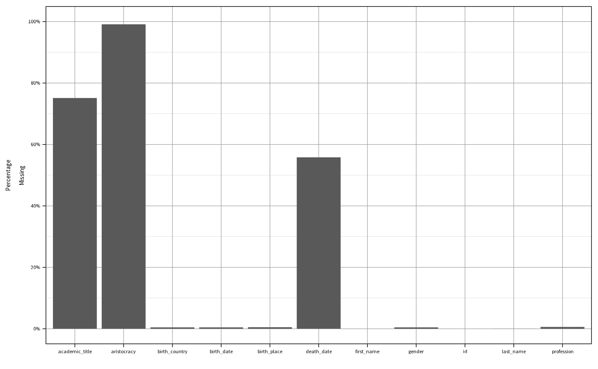
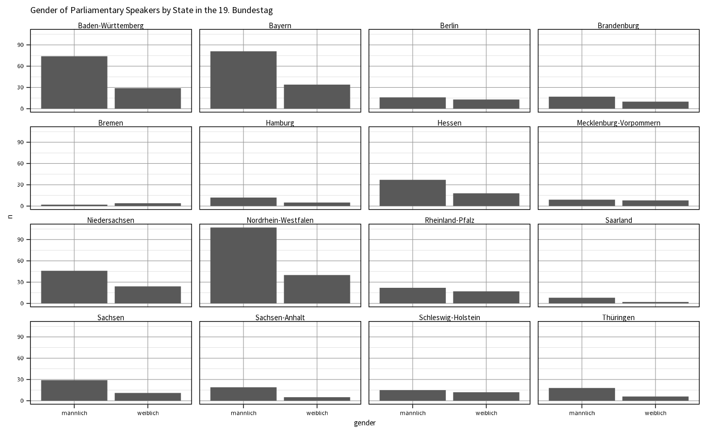

Introduction
Introduction.RmdThis short demonstration introduces some elementary capabilities of
the R package opendiscouRse.
Database setup
For the integrated Open Discourse database setup to work, you must set up database the database locally, e.g. by using Docker, as described here.
After configuring the database setup, we can obtain individual data
tables from the R6 class. In the following, we select the
politicians table.
od_obj <- OData$new()
politicians <- od_obj$get_table_data("politicians")$dataUsage of functions
count functions
count_data()
For simple data aggregations, we can use count_data() to
descriptively analyze the database. As we can see, the majority of
distinct politicians holding speeches in the Bundestag are men.
politicians |>
count_data(grouping_vars = "gender")
#> # A tibble: 3 × 2
#> # Groups: gender [3]
#> gender n
#> <chr> <int>
#> 1 männlich 3391
#> 2 weiblich 975
#> 3 NA 20
get functions
get_age()
Let’s move to generating new columns!
With the get_age() function, we can easily calculate the
age of politicians.
politicians |>
dplyr::mutate(
age = ifelse(
is.na(death_date),
# Alive politicians
get_age(birth_date, round_val = 0),
# Dead politicians
get_age_hist(death_date, birth_date, round_val = 0)
)
) |>
dplyr::select(first_name, last_name, age) |>
dplyr::slice(1:10)
#> # A tibble: 10 × 3
#> first_name last_name age
#> <chr> <chr> <dbl>
#> 1 Manfred Abelein 77
#> 2 Ernst Achenbach 83
#> 3 Annemarie Ackermann 81
#> 4 Else Ackermann 86
#> 5 Ulrich Adam 73
#> 6 Rudolf Adams 94
#> 7 Raban Adelmann 79
#> 8 Konrad Adenauer 91
#> 9 Brigitte Adler 60
#> 10 Eduard Adorno 80For substantive analyses, the type of profession is also interesting.
get_profession_groups() takes a data.frame
with information regarding the professional occupation, indicated in the
politicians data table, and returns a
data.frame with dummy variables indicating the profession
per group (we defined 7 profession categories).
get_profession_groups(politicians, "profession") |>
dplyr::select(first_name, last_name, dplyr::starts_with("group_")) |>
dplyr::slice(1:10)
#> # A tibble: 10 × 9
#> first_name last_name group_recht group_wirtschaft group_naturwissenschaft
#> <chr> <chr> <dbl> <dbl> <dbl>
#> 1 Manfred Abelein 1 1 0
#> 2 Ernst Achenbach 1 0 0
#> 3 Annemarie Ackermann 0 0 0
#> 4 Else Ackermann 0 0 0
#> 5 Ulrich Adam 0 0 0
#> 6 Rudolf Adams 0 0 0
#> 7 Raban Adelmann 0 0 0
#> 8 Konrad Adenauer 0 0 0
#> 9 Brigitte Adler 0 0 0
#> 10 Eduard Adorno 0 0 0
#> # ℹ 4 more variables: group_gesellschaftswissenschaft <dbl>, group_agrar <dbl>,
#> # group_journalismus <dbl>, group_handwerk <dbl>When investigating the background of politicians, the affiliated
state (Bundesland) is politically of interest. State
affiliations get be obtained with get_state().
get_state(
as.numeric(politicians$id),
electoral_term = c(12, 17)
) |>
table()
#>
#> Baden-Württemberg Bayern Berlin
#> 79 99 29
#> Brandenburg Bremen Hamburg
#> 19 5 16
#> Hessen Mecklenburg-Vorpommern Niedersachsen
#> 45 16 62
#> Nordrhein-Westfalen Rheinland-Pfalz Saarland
#> 142 36 10
#> Sachsen Sachsen-Anhalt Schleswig-Holstein
#> 35 20 26
#> Thüringen
#> 22For data visualization purposes (in party research), it is often
desired or at least advised to use colors that match parties (or
factions). get_faction_color() takes care fo that and
yields hex color codes that can be used to visualize parties
accordingly.
For that, we need to get a distinctive indication of political groups
acting in the Bundestag. Let’s load the factions table.
od_obj <- OData$new()
factions <- od_obj$get_table_data("factions")$data
get_faction_color(factions$abbreviation, id_type = "faction_name")
#> <NA> AfD BHE BP Grüne CDU/CSU
#> NA "#009EE0" "#C3C318" "#386ABC" "#64A12D" "#000000"
#> DA DIE LINKE. DP DP/DBP DP/FVP DPB
#> "#000000" "#BE3075" "#63B8FF" "#63B8FF" "#63B8FF" NA
#> DRP DRP/NR FDP FU FVP Fraktionslos
#> "#8b4726" "#8b4726" "#FFEE00" NA "#FFEE00" NA
#> GB/BHE Gast KO KPD NR PDS
#> "#C3C318" NA NA "#8B0000" "#8b4726" "#BE3075"
#> SPD SSW WAV Z
#> "#EB001F" "#003C8F" "#FFEC8B" "#0000CD"
plot functions
plot_cov()
The package comes with several plotting functions. For descriptive
purposes, we might be interested in the coverage of the data table.
plot_cov() visualizes NAs for the whole table.
Of course, there is a ggplot2 Open
Discourse theme.

plot_count()
As shown above, count_data() computes counts per
grouping variables. plot_count() builds on that and is able
to visualize this type of counted data specifically. If we also
incorporate the Bundesland (state) affiliation through
get_state(), we can show how the distribution of gender
across states looks like.
politicians |>
dplyr::mutate(state = get_state(id, electoral_term = 19)) |>
dplyr::filter(!is.na(state)) |>
count_data(grouping_vars = c("state", "gender")) |>
plot_count(x_var = "gender", facet_var = "state") +
theme_od() +
ggplot2::ggtitle("Gender of Parliamentary Speakers by State in the 19. Bundestag")